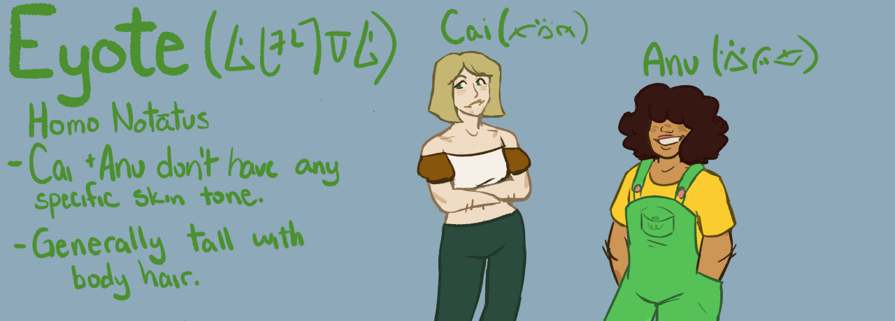

Eyote
Homo notātus

Home Planet: Yeoliv
Brief Synopsis: A species similar to humans (homo sapiens), but they appear taller and have a different melanin production system in their skin, as well as completely different dietary restrictions.
Native Region: They inhabit the planet of Yeoliv, but most Eyote who appear in intergalactic society are Xeian.
Language(s) Spoken:Various dialects of Eyote.
Key Physical Attributes: They generally appear the same as humans, although Eyote tend to be approximately ~5 inches taller on average. Aside from height, their most notable difference from humans would be the markings across their faces and bodies. The markings vary in appearance, with some looking like streaks while others resemble spots. They're caused by melanin clumping itself up during production. In Eyote society, these markings also play a role in determining what ethnic group you belong to.
Anatomy: Description
Common Behaviors: Description
Eating Habits: Eyote are primarily carnivores, though if meat is hard to find some Jo are able to temporarily regress to eating primarily plants. It’s not healthy for them to have largely plant-based diets though.
Preferred Habitat:
- Gan:Tend to live in cities and highly cluttered places, as it’s easier to blend in.
- Jo: Love to be in open spaces to run around.
Family Structure: Families are very similar to those of humans, although they are more matriarchal. Children are expected to get married and have children of their own soon after secondary school. Couples without children are seen as oddities.
Life Stages:
- Baby: Birth- One year
- Toddler: 2-4
- Young child: 5- around 8
- Older child: ~8- ~10
- Adolescent: 10-15
- Young adult: ~15-22
- Adult:22-53
- Elder:53+
Way of Dress: If they wear anything at all, they wear flowy clothing. Eyote prefer being comfortable and casual in all aspects of life, so they don’t really like being bogged down by their clothing affecting movement. Tight clothes are seen as rebellious and promiscuous. Why should you need to see the outline of someone’s body? In recent years, influence by western human societies has started to play a role in fashion choices of adolescent Eyote.
Religion?: Eyote have one loosely connected global religion, in which there aree thirteen gods. Each sub-group of the religion worships a certain god, with their own unique practices.
Characters belonging to species: Bluzie, Random, Lily, Clover